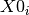

GetDetOffsetsMultiPeaks dialog.
Table of Contents
Creates an OffsetsWorkspace containing offsets for each detector. You can then save these to a .cal file using SaveCalFile.
| Name | Direction | Type | Default | Description |
|---|---|---|---|---|
| InputWorkspace | Input | MatrixWorkspace | Mandatory | A 2D matrix workspace with X values of d-spacing |
| DReference | Input | dbl list | Enter a comma-separated list of the expected X-position of the centre of the peaks. Only peaks near these positions will be fitted. | |
| FitWindowMaxWidth | Input | number | 0 | Optional: The maximum width of the fitting window. If this is <=0 the window is not specified to FindPeaks |
| FitwindowTableWorkspace | Input | TableWorkspace | Name of the input Tableworkspace containing peak fit window information for each spectrum. | |
| PeakFunction | Input | string | Gaussian | Type of peak to fit. Allowed values: [‘BackToBackExponential’, ‘Bk2BkExpConvPV’, ‘DeltaFunction’, ‘ElasticDiffRotDiscreteCircle’, ‘ElasticDiffSphere’, ‘ElasticIsoRotDiff’, ‘ExamplePeakFunction’, ‘Gaussian’, ‘IkedaCarpenterPV’, ‘Lorentzian’, ‘PseudoVoigt’, ‘Voigt’] |
| BackgroundType | Input | string | Linear | Type of Background. The choice can be either Linear or Quadratic. Allowed values: [‘Flat’, ‘Linear’, ‘Quadratic’] |
| HighBackground | Input | boolean | True | Relatively weak peak in high background |
| GroupingFileName | Input | string | Optional: The name of the output CalFile to save the generated OffsetsWorkspace. Allowed extensions: [‘.cal’] | |
| OutputWorkspace | Output | OffsetsWorkspace | An output workspace containing the offsets. | |
| NumberPeaksWorkspace | Output | OffsetsWorkspace | An output workspace containing the offsets. | |
| MaskWorkspace | Output | MatrixWorkspace | Mask | An output workspace containing the mask. |
| MaxOffset | Input | number | 1 | Maximum absolute value of offsets; default is 1 |
| MaxChiSq | Input | number | 100 | Maximum chisq value for individual peak fit allowed. (Default: 100) |
| MinimumPeakHeight | Input | number | 2 | Minimum value allowed for peak height. |
| MinimumPeakHeightObs | Input | number | 0 | Least value of the maximum observed Y value of a peak within specified region. If any peak’s maximum observed Y value is smaller, then this peak will not be fit. It is designed for EventWorkspace with integer counts. |
| Minimizer | Input | string | Levenberg-MarquardtMD | Minimizer to use for fitting peaks. Allowed values: [‘BFGS’, ‘Conjugate gradient (Fletcher-Reeves imp.)’, ‘Conjugate gradient (Polak-Ribiere imp.)’, ‘Damped GaussNewton’, ‘FABADA’, ‘Levenberg-Marquardt’, ‘Levenberg-MarquardtMD’, ‘Simplex’, ‘SteepestDescent’, ‘Trust Region’] |
| InputResolutionWorkspace | Input | MatrixWorkspace | Name of the optional input resolution (delta(d)/d) workspace. | |
| SpectraFitInfoTableWorkspace | Output | TableWorkspace | Name of the output table workspace containing spectra peak fit information. | |
| PeaksOffsetTableWorkspace | Output | TableWorkspace | Name of an output table workspace containing peaks’ offset data. | |
| FittedResolutionWorkspace | Output | MatrixWorkspace | ResolutionWS | Name of the resolution workspace containing delta(d)/d for each unmasked spectrum. |
| MinimumResolutionFactor | Input | number | 0.1 | Factor of the minimum allowed Delta(d)/d of any peak to its suggested Delta(d)/d. |
| MaximumResolutionFactor | Input | number | 10 | Factor of the maximum allowed Delta(d)/d of any peak to its suggested Delta(d)/d. |
This algorithm requires a workspace that is in d-spacingand has been rebinned to a common set of d-spacing bin boundaries. In this first step you select one spectrum to be the reference spectrum and all of the other spectrum are cross correlated against it. Each output spectrum then contains a peak whose location defines the offset from the reference spectrum.
The algorithm iterates over each spectrum in the workspace and fits a function (default is a Gaussian) to the reference peak. The fit is used to calculate the centre of the fitted peak, and the offset is then calculated as:
This is then written into a .cal file for every detector that contributes to that spectrum. All of the entries in the cal file are initially set to both be included, but also to all group into a single group on DiffractionFocussing v2. The CreateCalFileByNames v1 algorithm can be used to alter the grouping in the cal file.
The algorithm to calculate offset of peaks’ positions is to minimize a cost function as

, which p is the index of a peak whose position is within MinD and MaxD.
The (fitted) peak must meet a series of criteria to be used to fit spectrum’s offset.
A peak will not be used if
 of peak fitting is larger than pre-defined maximum
value;
of peak fitting is larger than pre-defined maximum
value; ;
; ;
; is larger than 2.0;
is larger than 2.0; ) is out of user-specified range.
) is out of user-specified range.There are two approach to generate fit window. One is via property ‘FitWindowMaxWidth’; and the other is ‘FitwindowTableWorkspace’.
If neither of these 2 properties are correctly specified, then then there won’t be any window defined.
By specifying a postive float, maxWidth, for ‘FitWindowMaxWidth’, it is the definition of fit window for peaks indexed from 0 to N-1:
- Peak 0: window =
,
- Peak
: window =
,
- Peak
: window =
where  is the centre of i-th peak.
FitwindowTableWorkspace contains the fit window for each individual peak in the workspace
to find.
It contains  columns, where N is the number of peaks positions specified in ‘DReference’.
columns, where N is the number of peaks positions specified in ‘DReference’.
 . If
. If  , then it is a ‘universal’ spectrum;
, then it is a ‘universal’ spectrum; : left boundary of peak
: left boundary of peak  defined in ‘DReference’ of spectrum
defined in ‘DReference’ of spectrum  ;
; : right boundary of peak defined in ‘DReference’ of spectrum ;
: right boundary of peak defined in ‘DReference’ of spectrum ;In the fit window table workspace, if there is a row, whose ‘spectrum number’ is a negative number, then the fit windows defined in this row is treated as the default fit windows. It means that for any spectrum that has no fit windows defined in the tableworkspace, the default fit windows will be applied to it.
GetDetOffsetsMultiPeaks have 2 levels of fitting. First it will call FindPeaks to fit Bragg peaks within d-range. Then it will fit offsets from the peak positions obtained in the previous step. Therefore, the performance of FindPeaks is critical to this algorithm. It is necessary to output values reflecting the goodness of fitting of this algorithm to users.
A spectrum will be masked if it is a dead pixel, has an empty detector or has no peak that can be fit with given peak positions. The performance of FindPeaks affects the third criteria. A better algorithm to find and fit peaks may save some spectrum with relatively much fewer events received, i.e., poorer signal.
of the offset fitting function¶The goodness of fit,  , of the offset fitting
function
, of the offset fitting
function

is an important measure of fitting quality on each spectrum (indexed as spNum).
We observed that in some situation, the calibrated peaks’ positions of
some spectra are far off to the targeted peak positions, while goodness
of fit such as are still good. It is usally caused by the
bad fit of one or two peaks in that spectrum, which feeds some erroreous
peak positions to peak offset fitting function.
This type of bad fitting is very easily identified by visualization, because the shift of peaks from the correct positions is significant in fill plot.
Therefore, deviation of highest peak if spectrum i,  is
defined as:
is
defined as:

where  is the fitted centre of the highest peak of
spectrum i, and
is the fitted centre of the highest peak of
spectrum i, and  is the theoretical centre of this peak.
is the theoretical centre of this peak.
Be noticed that the idea of this section is still under development and has not been implemented yet.
On the other hand, since GetDetOffsetsMultiPeaks always operates on an
EventWorkspace with thousands or several ten thousands of spectra, it is
very hard to tell the quality of fitting by looking at
of all spectra. Hence, Here are two other
parameters are defined for comparison of results.
, where s is the index of any unmasked spectrum and  is
the number of unmasked spectra;
is
the number of unmasked spectra;
,
where  is the height of highest peak of spectrum s.
is the height of highest peak of spectrum s.
The offset in unit of d-spacing differs is proportional to peak’s position by definition:

where  is the focussed peak position, and
is the focussed peak position, and
 is the observed peak position by fitting.
is the observed peak position by fitting.
As different spectrum covers different d-space range, the highest peak differs. Therefore, the error of offset should be normalized by the peak’s position.

And it is unitless.
By this mean, the error of all peaks should be close if they are fitted correctly.
A MaskWorskpace is output from the algorithm. Along with it, a TableWorkspace is output to describe the status of offset calculation.
Here are the cases that a spectra (i.e., a detector) will be masked in the output MaskWorkspace.
 in defined d-range. It isnoted as “dead det”;
in defined d-range. It isnoted as “dead det”;
- Algorithm FindPeaks fails to find any peak;
- No peak found has height larger than specified ‘MinimumPeakHeight’;
- No peak found has observed height larger than specified ‘MinimumPeakHeightObs’;
- No peak found has resolution within specified range;
- No peak found whose calculated offset is smaller than the user-defined maximum offset.
import os
# Create a workspace with two Gaussian peaks in each spectrum
function_str = 'name=Gaussian,Height=3,PeakCentre=5,Sigma=0.3;name=Gaussian,Height=2.1,PeakCentre=15,Sigma=0.3'
ws = CreateSampleWorkspace(Function='User Defined',UserDefinedFunction=function_str,XMin=0,XMax=20,BinWidth=0.1)
# Make sure the X axis is in d-spacing.
ws.getAxis(0).setUnit( 'dSpacing' )
# Generate a file path to save the .cal file at.
calFilePath = os.path.expanduser( '~/MantidUsageExample_CalFile.cal' )
# Run the algorithm
msk = GetDetOffsetsMultiPeaks(ws,DReference=[5,15], GroupingFileName=calFilePath)
# Read the saved .cal file back in
f = open( calFilePath, 'r' )
file = f.read().split('\n')
f.close()
# Print out first 10 lines of the file
print("{} ...".format(file[0][:55]))
for line in file[1:10]:
print(line)
# Calibration file for instrument basic_rect written on ...
# Format: number UDET offset select group
0 100 -0.0033750 1 1
1 101 -0.0033750 1 1
2 102 -0.0033750 1 1
3 103 -0.0033750 1 1
4 104 -0.0033750 1 1
5 105 -0.0033750 1 1
6 106 -0.0033750 1 1
7 107 -0.0033750 1 1
See also
Algorithm EstimateResolutionDiffraction v1
Categories: Algorithms | Diffraction\Calibration
C++ source: GetDetOffsetsMultiPeaks.cpp (last modified: 2018-03-07)
C++ header: GetDetOffsetsMultiPeaks.h (last modified: 2018-03-07)